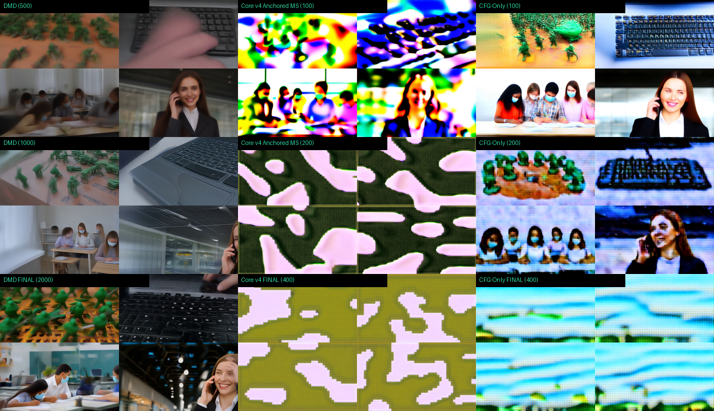
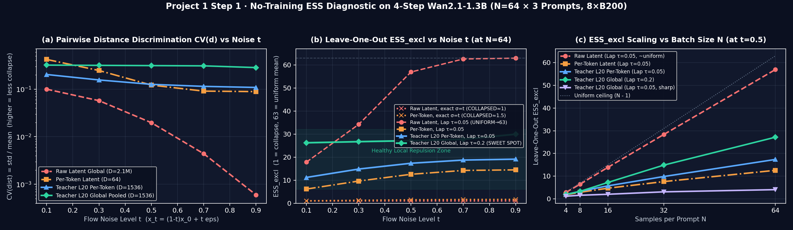

Wan2.1-T2V-1.3B distilled from Wan2.1-T2V-14B (CFG = 3.0) · Updated Nov 25, 2026Wan2.1-1.3B).
(1) Our no-training ESS diagnostic proved raw 2.1M-dim video latents collapse due to measure concentration (CV(d) = 0.0006 at t = 0.9), whereas frozen Teacher intermediate hidden states retain 470× stronger discrimination (CV(d) = 0.28–0.32, healthy ESS = 48% at N = 16).
(2) However, across four Mean-Shift formulations (Core v1–v4) plus a zero-training Monte-Carlo FakeScore diagnostic, every FakeScore-free DMD half-replacement collapsed, while standard DMD stayed sharp and stable through 400 generator updates.
(3) Root cause: D_real(x_t) is a spatially aligned posterior mean conditioned on xt, while a cross-video batch average x0_ms mixes clean videos with different spatial layouts — so their difference does not vanish even when q = p. Next step: pivot to symmetric sample-vs-sample Video Teacher-Feature Drifting (Video-TFD).
All models start from the identical Hybrid-Forcing Wan2.1-1.3B checkpoint, use the same frozen Wan2.1-14B Teacher (CFG = 3.0, LR = 2e-6), and are evaluated on the exact same 4 validation prompts (toy soldiers, keyboard, classroom students, woman on phone).
ms_x0 from uncond_x0 collapsed earlier than CFG-Only.ms_x0 − detached pushes latents radially outward without a real-data anchor, causing high-contrast color-noise breakdown.

| Feature Space | Dim D | CV(d) (t = 0.1 → 0.5 → 0.9) | Exact σ = t ESS_excl (N=64) | Norm Laplace ESS_excl (t=0.5, τ=0.05 / 0.2) | Verdict |
|---|---|---|---|---|---|
| (a) Raw Latent Global | 2,096,640 | 0.100 → 0.020 → 0.0006 | 1.00 (self_w = 1.000) | 56.97 / 62.55 (uniform) | Ruled out |
| (b) Per-Token Latent (2×2) | 64 | 0.421 → 0.122 → 0.089 | 1.04 – 1.65 | 12.56 / 51.69 | Degrades at high t |
| (c1) Teacher L20 Global Pooled | 1,536 | 0.320 → 0.312 → 0.284 | — | 4.05 / 27.16 (43%) | Winner (470× CV) |
| (c2) Teacher L20 Per-Token | 1,536 | 0.203 → 0.126 → 0.108 | — | 17.35 (28%) / 54.71 | Winner (local) |
We further tested whether averaging K student continuations starting from the exact same noisy x_t (with fresh renoise) can approximate the trained DMD D_fake. Metric: rel_dm = ||F − D_fake|| / ||D_fake − D_c|| (where 1.0 equals dropping the distribution-matching term entirely).
| Noise σ | MC K=1 | MC K=16 | MC K→∞ (fit) | SDS (x0) | Student 1-step | CFG-Only (uncond) | Core v1 x0_ms |
|---|---|---|---|---|---|---|---|
| 0.9375 | 4.95 | 3.21 | 3.08 | 3.53 | 4.82 | 1.02 | 3.76 |
| 0.8333 | 3.95 | 2.93 | 2.86 | 2.87 | 3.32 | 0.99 | 5.47 |
| 0.6250 | 2.46 | — | — | 2.33 | 2.46 | 0.99 | 7.80 |
Core v1–v4) and the MC-FakeScore diagnostic establish that sample-based surrogates cannot be directly subtracted from DMD's posterior mean D_real(x_t). A mathematically consistent FakeScore-free objective requires matching two symmetric objects: either posterior means at the same x_t (DMD) or samples vs. samples in feature space (Teacher-Feature Drifting, arXiv:2605.07327).
Proposed Phase-1 Validation (Video-TFD on Wan2.1-1.3B): (1) Evaluate our converged DMD Baseline on VBench + K=8 multi-seed DINOv3 diversity as the reference bar; (2) Build a reusable offline positive bank of 1,000 prompts × 4 videos generated by Wan2.1-T2V-14B (stored as compact bf16 latents); (3) Train a zero-FakeScore Wan2.1-1.3B student with symmetric multi-layer Drifting + Anchor-Margin coverage loss in frozen Wan2.1-1.3B Teacher hidden states (σ = 0.1, layers L6, L12, L18, L24, L29), where equilibrium V = 0 holds identically at q = p without spatial-layout misalignment.